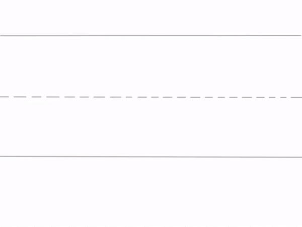

Lesson 25
r /r/ Part 2

ufliteracy.org


Lesson 25
r /r/ Part 2


See UFLI Foundations lesson plan Step 1 for phonemic awareness activity.


See UFLI Foundations lesson plan Step 2 for student phoneme responses.


r
h
k
s
e
b
g
u
c
d
o
n
i
f
p
t
m
a


See UFLI Foundations lesson plan Step 3 for auditory drill activity.

No slides needed for auditory drill.


See UFLI Foundations lesson plan Step 4 for blending drill word chain and grid.
Visit ufliteracy.org to access the Blending Board app.


See UFLI Foundations lesson plan Step 5 for recommended teacher language and activities to introduce the new concept.
beginning
middle
end
rat
run
r
grab
frog
c r o p
t r i p

r



Lowercase r gif

brag

crab
trim
drop
crib
drip
grab
prop
grub
grins

See UFLI Foundations lesson plan Step 5 for words to spell.
Handwriting paper to model spelling.

See UFLI Foundations lesson plan Step 5 for words to spell.
Handwriting paper for guided spelling practice.


Insert brief reinforcement activity and/or transition to next part of reading block.

Lesson 25
r /r/ Part 2

New Concept Review

See UFLI Foundations lesson plan Step 5 for recommended teacher language and activities to review the new concept.
beginning
middle
end
rat
run
r
grab
frog
c r o p
t r i p
r
Lowercase r gif
frog
trip
grab
drum


See UFLI Foundations lesson plan Step 6 for word work activity.
Visit ufliteracy.org to access the Word Work Mat apps.


See UFLI Foundations lesson plan Step 7 for irregular word activities.
The white rectangle under each word may be used in editing mode. Cover the heart and square icons then reveal them one at a time during instruction.

See UFLI Foundations manual for more information about reviewing irregular words.

see
Lessons 19-84
*Temporarily irregular
EE /ē/ has not been introduced yet.
The white rectangle under the word may be used in editing mode. Cover the heart and square icons then reveal them one at a time during instruction.
he
Lessons 23-65
*Temporarily irregular
E /ē/ has not been introduced yet.
The white rectangle under the word may be used in editing mode. Cover the heart and square icons then reveal them one at a time during instruction.
be
Lessons 23-65
*Temporarily irregular
E /ē/ has not been introduced yet.
The white rectangle under the word may be used in editing mode. Cover the heart and square icons then reveal them one at a time during instruction.
me
Lessons 23-65
*Temporarily irregular
E /ē/ has not been introduced yet.
The white rectangle under the word may be used in editing mode. Cover the heart and square icons then reveal them one at a time during instruction.
ask
Lessons 22-77AUS
*Temporarily irregular
A /ar/ has not been introduced yet.
The white rectangle under the word may be used in editing mode. Cover the heart and square icons then reveal them one at a time during instruction.
fast
Lessons 22-77AUS
*Temporarily irregular
A /ar/ has not been introduced yet.
The white rectangle under the word may be used in editing mode. Cover the heart and square icons then reveal them one at a time during instruction.
Handwriting paper for irregular word spelling practice. Use as needed.
See UFLI Foundations manual for more information about reviewing irregular words.


See UFLI Foundations lesson plan Step 8 for connected text activities.
Greg grins at me.
Do not drop the drum!
Grab a hat from the bin.
See UFLI Foundations lesson plan Step 8 for sentences to write.

The UFLI Foundations decodable text is provided here. See UFLI Foundations decodable text guide for additional text options.
The Drums
Greg and Brent get drums.
Greg’s drum is big and red.
Greg taps the drum.
The drum is fun.
Greg trips and drops his drum.
BAM! The drum is bent.
Greg is sad.
“Do not fret, Greg,” said Brent.
Brent grabs his drum and hands it to Greg.
Greg grins at Brent.
Greg and Brent tap Brent’s drum.

Insert brief reinforcement activity and/or transition to next part of reading block.